この章ではオリジナルWebサービスをつくるために必要な考え方と具体的なステップについて解説していきます。TECH::CAMPの卒業生の皆さんにはオリジナルWebサービスをリリースしてほしいと考えています。受講期間が終わるとメンターに質問することはできませんが、本章は引き続き公開されます。少しでも皆さんの手助けになることを願っています。
RailsでWebサービスを開発する際に必要な手順として、下記のことについてそれぞれ学びましょう。
Webサービス開発におけるプロトタイプとは、主にシュミレーションを目的とした、本実装を開始する前に作成する試作品のことを指します。一言でプロトタイプといっても、詳細仕様が詰め切れていない時点で作成されるペーパープロトタイプや、単純な動作モックアップレベルのプロトタイプまで様々なものがあります。
その中でも今回は、単純な動作モックアップのプロトタイプを作る過程を説明していきます。
Webサービスのプロトタイプを作ることで、自分の立てた仮説をユーザーから素早く評価してもらうことができるようになります。また文章のみで評価されるよりもさらに深いフィードバックを得ることができます。
特にプロジェクトの概要を知らされていないユーザーにプロトタイプを触ってもらうことで、先入観にとらわれない、より本質的な問題や潜在ニーズの発見も可能です。
プロトタイピング作成後は、ユーザーに使ってもらえるもサービスなのかを検証し、改善が必要な場合は再度仮説を立てます。このサイクルを何度も繰り返し、ユーザーに使ってもらえるようなサービスにすることができます。
まずは凝り過ぎずにプロトタイプを完成させてみましょう！
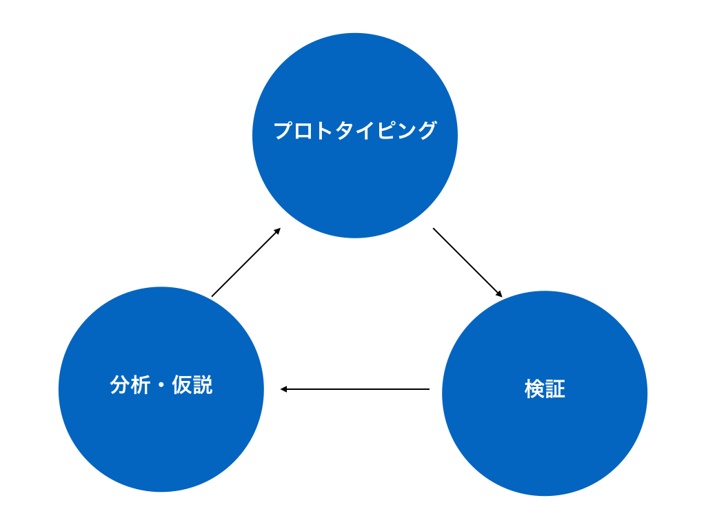
サービスのアイデアは身近な問題に着目するのがよいでしょう。
下記は参考例です。
【例1】今日は仕事が忙しくてオフィスに泊まって帰りたいけど寝袋がない。仕方なく雑魚寝したけど、実は横にいる先輩社員が寝袋を持っていた。
→自分の所有物を登録してチームでシェアできるWebサービス
【例2】服を買いに行くのは面倒だが、自分に合ったイケてる服が欲しい
→知らない人に自分に合うような服を選んでもらえるWebサービス
自分が解決したい問題について書き出しましょう。
白紙やノートにまとめると簡単なため、お勧めします。なるべく多くの問題について書き出すことで質の良いアイデアを出すことができます。
ある程度書き出したら次は解決策に対して考えてみましょう。今回は簡単にアイデアを出すのにメジャーなマインドマップを利用しましょう。
マインドマップとは表現したい概念の中心となるキーワードやイメージを中央に置き、そこから放射状にキーワードやイメージを広げ、つなげていきます。繋げていくことで1枚でアイデア全体を見渡すことができるため、情報が整理しやすい方法です。
【例】
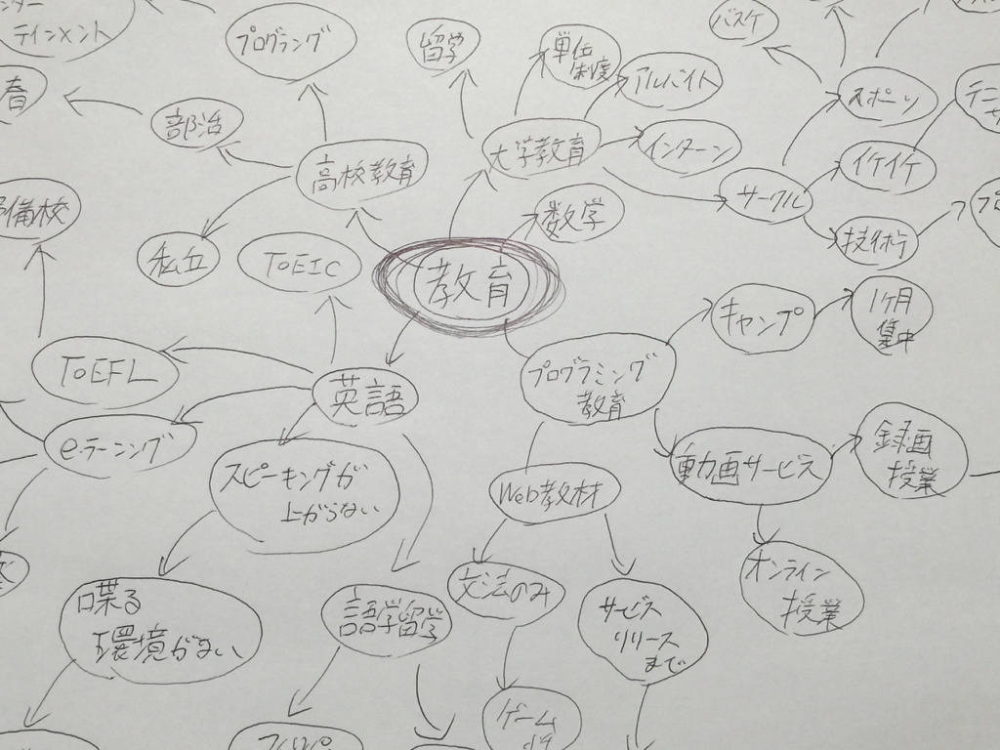
アイデアがでたら白紙に落とし込みましょう。
まずは「誰」の「どんな問題」を「どういう方法で解決」するのかを書き出しましょう。あまり考えすぎず、自分が作りたいものを書き出してみて下さい。
アイデアは、通常、仮説検証しながら更新していきます。そのため、最初の段階では、あまり考えすぎず仮決めでも書くことをおすすめします。
UIはユーザーインターフェースの略です。ユーザーインターフェースは人が道具を利用する際に接する部分のことを指します。ユーザーがあるシステムを利用しようとするとき、それは常にユーザーインターフェイスを通して行われます。サービス開発において、ユーザーが混乱しない分かりやすいUIを設計することは、非常に重要です。
【例】
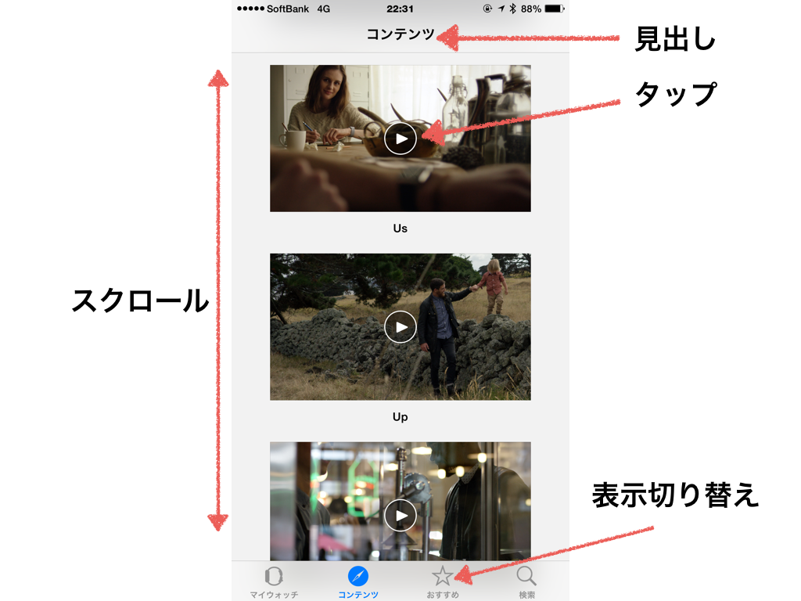
他のアプリ、Webサービスを参考にしてみましょう、凝らずにシンプルなUI設計をするのがおすすめです。
facebookやTwitterなど使い慣れたサービスを十分に参考にしましょう。
使ってもらうサービスがどんな人で、普段どんなサービスを利用しているかを考慮することで、ユーザーに使いやすさを提供することができます。
1枚につき、1つの画面を書くことで整理がしやすくなります。
【例】
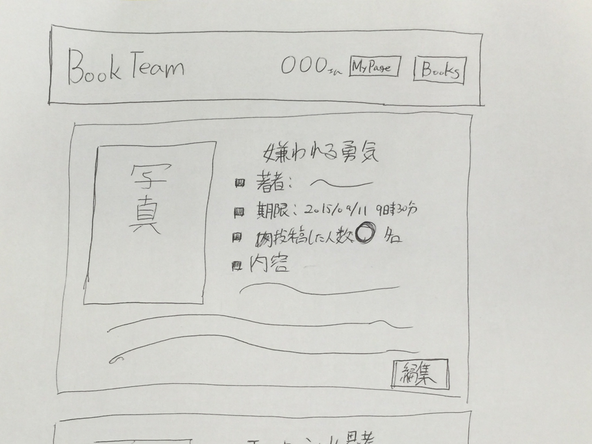
ペーパープロトタイプしたものを今回はPOPというプロトタイピングツールを使用して画面遷移を考えていきましょう。画面構成を書いた紙を写真で撮ったものに対して、ボタンなどの機能をつけることができ、画面遷移を指定することができるため、より実装に近い状態で検証することができます。iOS版とAndroid版があるので、持っているスマートフォンでも作る事はできます。

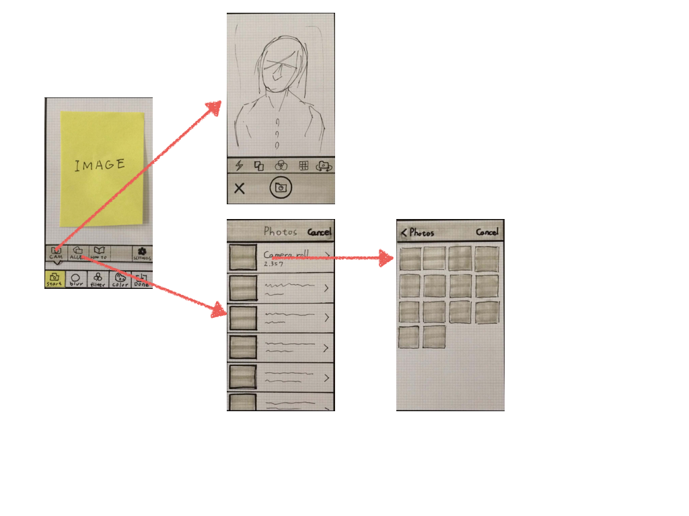
必要な情報を紙に書き出しましょう。
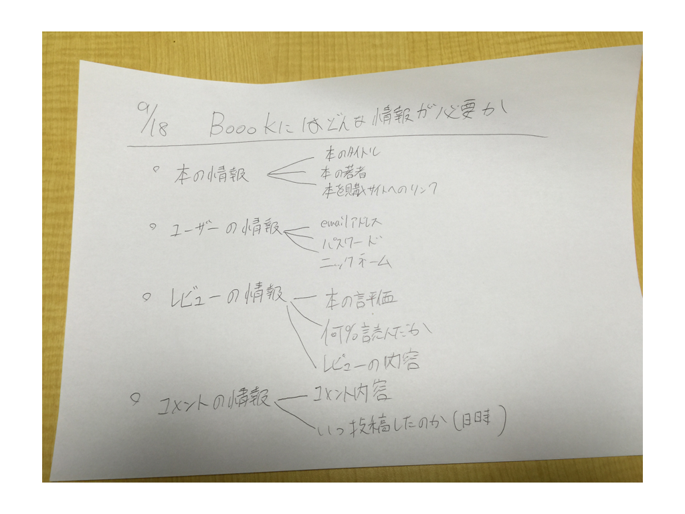
Boookにはどんな情報が必要かをまとめると以下の通りとなります。
1.本の情報
2.ユーザーの情報
3.レビューの情報
4.レビューに対するコメントの情報
他にも様々な情報が必要となってきますが、上記の情報が本のレビューを投稿するに Boook のサービスにあたっては必須なデータとなります。
また上記の情報を利用するにあたって、以下のケースが考えられます。
本は複数のレビューを持っている。
レビューはどこかの１つの本に従属している。
このような関係のことを「１対多の関係」と呼びます。
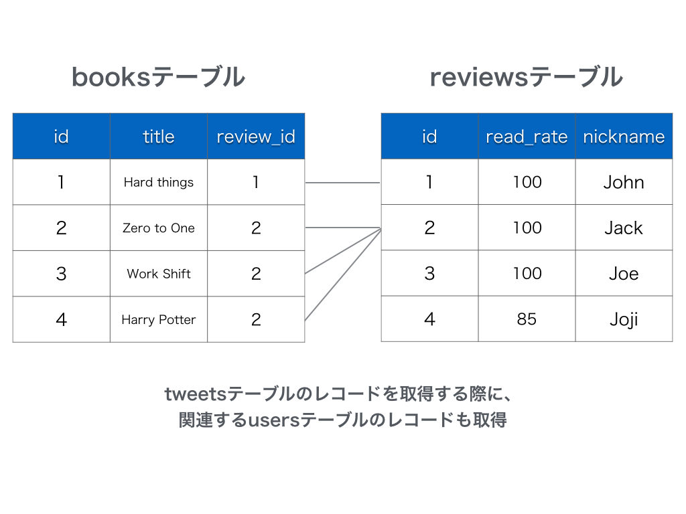
上記の2点を簡単に行うには、ユーザーと本、本とレビューの間にそれぞれリレーションを結ぶことが必要になってきます。
今まで上げてきた情報の関係性を整理ができると下記の図のようになります。テーブル同士の関係性をまとめることができれば、テーブル設計は完成です。
【例】
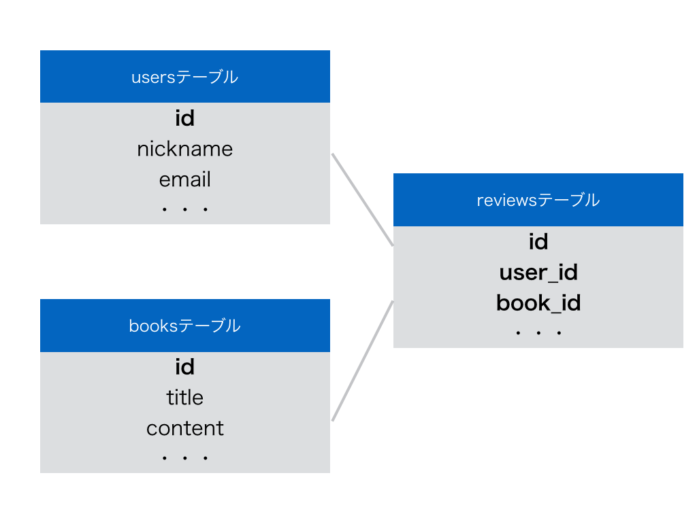
データベースによって情報を管理できるように，データモデルを作成していく作業です。
テーブルを設計するにあたっては後に変更があった場合も対応できる冗長性・拡張性を考慮することが重要です。
上記のことを踏まえ、開発を始める前にテーブル設計を行うことで開発がスムーズに進めることができます。
今回は本の感想をWebで投稿してシェアするサービスBoookという架空のサービスを例に考えていきます。
例えば下の図のご覧ください。 usersテーブル に本の 感想 を掲載するためのカラム review というカラムが追加されています。
このままだと1つの感想は投稿できますが、ユーザーが複数の感想を持つことはできません。これでは今後の変更を想定したとは言い切れません。ユーザーに対して複数の感想を持つようなデータベース構造が必要となります。
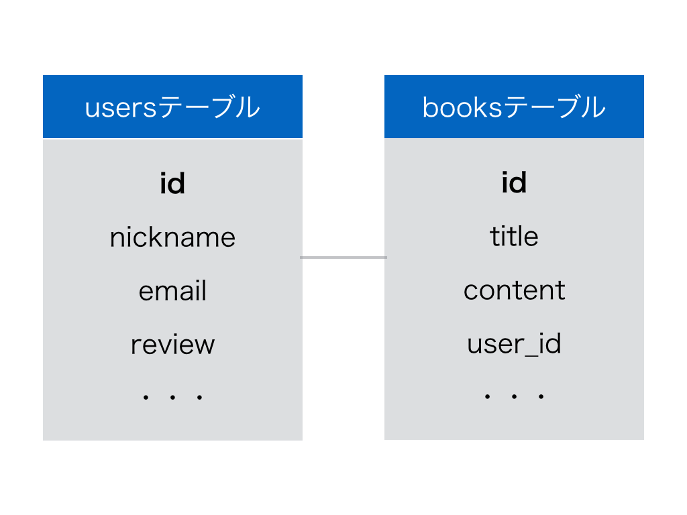
次にテーブル設計の手順についてです。
これからRailsのWebサービスを実装します。ほとんどの部分はTECH::CAMPの中で取り組んでいただいた部分のため、説明は割愛します。
以下に、例として上記のBoookの開発行程を幾つかピックアップして載せておきます。
- rails newコマンドでWebサービス開発を始める
【例】
1 2 |
$ rails new Boook -d mysql
# 「Boook」を「mysql」オプションで作成
|
41 |
gem 'pry-rails'
|
上記を記述できたら、ターミナルにて bundle install を実行しましょう。
1 |
$ bundle install
|
ルーティングを簡単に指定できるresourcesメソッドを利用していきましょう！
【例】
1 2 3 |
Rails.application.routes.draw do
resources :books, only: :index
end
|
ルーティングを設定した後、設定したコントローラーを作成し、ファイルの中で指定したアクションを設定してください。
【例】
1 |
$ bundle exec rails g controller books
|
必要なviewファイルを views 下に作成します。
【例】
Sublime Textの左のサイドバーでapp/views/booksフォルダを右クリックします。「New File」を押すことで新規ファイルを作成することができます。
データベース設計された図に基づいて、モデルとデータベースの作成を進めていきましょう！
【例】
1 |
$ bundle exec rails g model book
|
カラム名を指定するとともに、そこにどんなデータが入るのかを示す型も指定していきましょう。
【例】
1 2 3 4 5 6 7 8 9 10 11 12 |
title="db/migrate/2015XXXXXXXXXXXX_create_book.rb">
class CreateTweets < ActiveRecord::Migration
def change
create_table :tweets do |t|
t.string :title
t.text :author
t.text :image_url
t.text :content
t.timestamps
end
end
end
|
dbコマンドを使用してデータベースに反映させましょう。
1 2 3 4 5 |
$ bundle exec rake db:create
#新しくデータベースを作成する
$ bundle exec rake db:migrate
#マイグレーションファイルを実行しましょう
|
先ほど説明したリレーションや、どのビューにどの情報を表示するのかなどの実装を完了させます。また、簡易で良いのでビューファイルも用意しましょう。
ここまでできたところでローカル環境での開発は一先ず完成です。一般ユーザーの方にサービスを利用してもらえるようにサービスを公開できるよう、サーバーへとアップロードしていきましょう。
もっともサーバーへのアップロードが簡単なHerokuがオススメです。
Herokuは簡単にいうと、Ruby on Railsで作られたアプリケーションをアップロードするだけで、サービスとしてインターネット上で公開できるクラウドサーバーサービスです。
通常のレンタルサーバーと違い、負荷に応じてサーバーのスペックを簡単に上げられるのが利点です。サーバーの細かな設定をしなくて良い分、プロトタイプには向いています。ただ、ある一定の規模になると費用がかかります。また、細かいチューニングができない等のデメリットもあるのでずっと使い続けるかはサービスが軌道に乗った際に考えていくとよいでしょう。
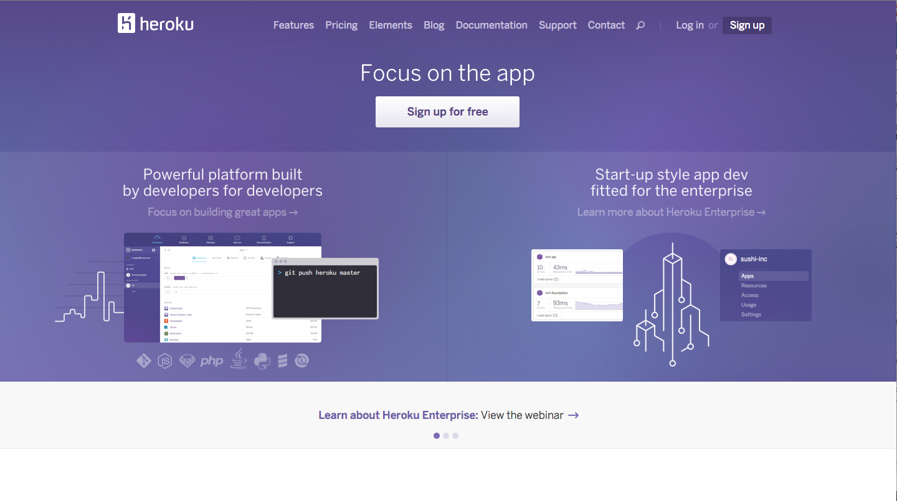
Herokuは基本的に無料で利用が可能ですが、使用するデータベースの設定がデフォルトでPostgreSQLというデータベースになっています。
PostgreSQLとは、オープンソースのリレーショナルデータベースです。PostgreSQLはMySQLと同じくオープンソースのリレーショナルデータベースです。昔から知名度のあるMySQLに比べ、PostgreSQLは近年になって人気が出てきています。オープンソースのMySQLよりもシェアのあるデータベースです。HerokuではPostgreSQLの他に、別途クレジットカードの登録をすることで(料金はかかりません)、これまでのカリキュラムでも使用してきたMySQLを使うこともできます。
TECH::CAMP期間中にオリジナルサービス開発にとりかかる場合、まずはGoogle formでサービス概要を記入していただきます。その後メンターにフィードバックをもらい、無理のない計画を立てることができたら、実際にコードを書き始めましょう。
開発したいオリジナルサービスのアイデアが決まったら、実際にGoogle formに記入してみましょう。
こちらは実際にオリジナルサービスを開発する際に、サービスとして成り立つのか、技術的に実現可能なのかフィードバックさせていただきます。
下記のリンクにアクセスしてください。
すると、以下のようなページに遷移します。
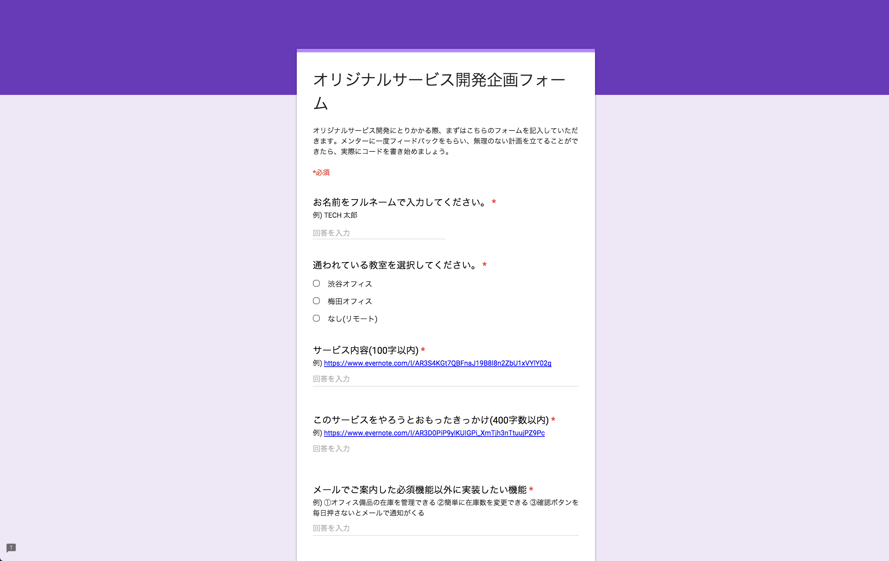
こちらの項目を、本章を参考に記入してください。下部にある【例】のシートも参考になります(こちらに書き込みを加えないよう注意してください)。
また本オリジナルサービス開発のカリキュラムのゴールはプロトタイプを開発することです。メンターがフィードバックする際は最大100時間で開発を終えることの出来るよう、ブラッシュアップさせていただきます。
Google formを提出した後、チャットにて面談の日時を組ませていただき、対面での面談(リモートスタイルの場合はSkype通話)にてフィードバックさせていただきます。問題がなければそのまま開発を進めていただきます。
メンターからフィードバックをもらった後はガントチャートで開発スケジュールを組みましょう。ガントチャートとはプロジェクト管理や生産管理などで工程管理に用いられる表の一種で、開発スケジュールを決める際に使用します。
ガントチャート
⚠フィードバック面談の際に別途メンターから記入可能なガントチャートをお渡しします。
こちらをチャットでメンターに記入したことを共有し、無理のない開発スケジュールかフィードバックをもらいましょう。
メンターからフィードバックをもらった後に開発スタートになります。
オリジナルサービス開発のソースコード管理は必ずGitで行いましょう。1人での開発でもバグなどの解消の際に大変便利です。
まだGitの使い方に不安のある方はもう一度復習しましょう。
はじめてのGit 1章
ご自身で開発する力をつけていただくため、以下の対応を取らせていただきます。
・ご自身でコードを全て書いていただきます。
・オリジナルサービスに関連するご質問はネット上で一度調べていただいてからメンターに質問していただきます。
・バグ解決など長時間を要する際、通常の受講者様の質問対応を優先させていただきます。
ここまでのカリキュラムで、1からオリジナルサービス開発を作る方法を学べたと思います。
TECH::CAMP卒業後、どうしても行き詰まってしまって分からなくなってしまうこともあると思いますが、是非TECH::CAMPで学んだ知識を元に頑張っていただけたらと思います。
TECH::CAMPはこちらで一旦終了となりますが、引き続きプログラミングを継続的に行っていただければ幸いです。
TECH::CAMP メンター一同
お疲れ様でした！このカリキュラムの終わりに確認問題を解きましょう。
 大宅 誠人
大宅 誠人